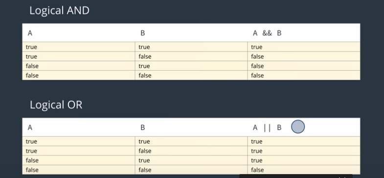

To view the Javascript console, right click and hit inspect. After inspecting, go to the Console tab. You can also use Ctrl + Shift + J. You can enter strings into the console like "Bob". If you use alert("string"), you can make a pop up with text. The Javascript console, like the python console, is convient when you are using short code, but longer code, for the same reasons as python, will become tedious. Text editors are recommended, but there are other ways.
The console is a like a sandbox, it is a place to try code without any risk or consequences. You can use it to debug or test code. If you want to display content in the console, use console.log. This allows you to run code and print strings in the console.
Similar to python, Java uses certain datatypes that help identify work with different information.
To define a number, all you have to do is write the number. It can be positive, negative, or even a decimal. With these values, you can do operations such as 1 + 1. You can also compare number, by using <><= >= != and == (these return boolean values).
To comment things out, it can be anything after a // or anything between /*... /*
Strings are indicated by text written between "" or ''. In javascript you can concatenate strings together like "hi" + " friend." keep in mind, you have to include the space in the quotes otherwise it will look likethis. In javascript, you can concatenate strings and integers, If there is an operation, it will give you the result of the operation, "mob" + 10*10 will return mob100. This unique feature is known as implicit type coercion.
Variables are used to store data. They can store any data into a varaible. To create a variable, type var variableName = value;. In javascript, you write variable name with the first letter of the first word in lowercase and the next words start with uppercase. This is known as camelCase. itLooksLikeThis. Using camelCase is not required, but it is considered the normal practice when working in javascript.
Strings can be index to return a specific letter in the string. To index a string, type "string"[number]. This will return the number located at the corresponding positon. Keep in mind that index start from 0 so "string"[0] will return "s". Indexing also works on variables. Empty spaces in a string also count as a position on index.
In javascript, to avoid syntax errors in strings that have quotes, use the escape character \ before the quote. The escape character tells javascript to ignore any sort of special meaning behind a character and use it literally. Some common special character are: \\ \" \' \n(newline) \t(tab)
You can use the == and != operator to compare strings. For example, "hi" == "hi". Keep in mind, by default, the text has to be exactly the same to return the value True. One thing to keep in mind, if you are comparing string with < >, it will return True or False based on the letters ASCII table code. For more on this go here
Null and Undefined are two values that seem very similar at first, but are different in what they actually do. Null refers to a variable that has no value, like None, it purposely return nothing, or null. Undefined means that there is no value assigned to it. Null looks like var x = null; undefined looks like var x;. NaN stands for Not-a-number and often appears when there is an error with number operation. For example, Nan might appear if you try to divide a string by a number or if you try to calculate something that is not possible (like square root of a negative number.)
Javascript is interesting in the way it treats number and strings. In python, you know that strings and integers cannot be used together; but with javascript, it is different. '1' == 1 is True and 0 == false is True. This is because javascript is a loosely typed language. This means that you do not have to specify data types in javascript, it will automatically convert data into the appropriate data type. This is why "julia" + 1 is "julia1". Programming languages like python, that types need to be specified, are known as strongly typed languages. It is considered bad practice to compare values for equality with == and != because they convert value in way you don't want. If you want strict equality, type an extra = instead of == or != it should be === and !==
In Javascript, it is possible to write more than one statement on a single line. This is due to the statements in javascript ending in ; . If this isn't included, you will get a syntaxerror. Some errors can occur if you don't include the semicolon at the end of the line, so it is best to include it at all time.
An if else statements allows you to print out a certain piece of code if a certain condition is met. They look like this:
Keep in mind that inside an if statement, the value is always converted to true or false. If you want more than two conditions, you can add another with else if.
If you want an and statement in javascript, you use the && character
between the two conditions. x === "x" && y === "y". These are logical
operators and they boolean values. The || characters are
used for or statements. And ! is used for not statement. Look at the
diagram below. You'll notice that if the first expression of an and
statement is false, both are false regardless. Likewise in an or statement
if the first expression is true, the rest is true regardless of the second.
This is known as short-circuiting because it
describes later events in arguments in a logical expression that are not
considered because the first already satisfied the condition.

There are some values that when evaluates to false all the time when converted. These are the six that exist in javascript:
A ternary operator is a shortcut for writting if else statement. The format looks like this: condition ? (if true) : (if false);
If you find yourself repeating the statement "else if" in your code, you
should probably switch over to a switch statement. A
switch statement allows you to access different scenerio based on case
predefined cases. A switch statment looks like the below code. The words
case below is similar to writting if. One thing to keep in mind is that if
option is 1, it will print case 1 till the end. To avoid this, use a break
statement. At the end of the switch statement, you can include a
default which will always be run regardless what cases
are met.
switch (option) {
case 1:
console.log("You selected option 1.");
case 2:
console.log("You selected option 2.");
}